Statystyki biegowe
Statystyki biegowe11 Półmaraton Warszawski (2016)
Histogramy
Klasyfikacja generalna
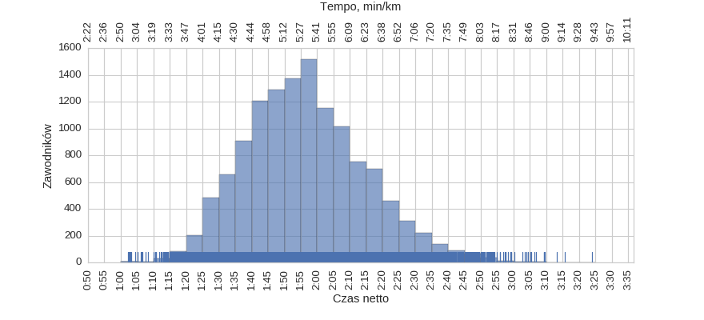
| mean | std | min | 25% | 50% | 75% | max | |
|---|---|---|---|---|---|---|---|
| czas | 1:56:31 | 0:18:19 | 1:02:14 | 1:43:33 | 1:55:22 | 2:08:09 | 3:23:59 |
kobiety
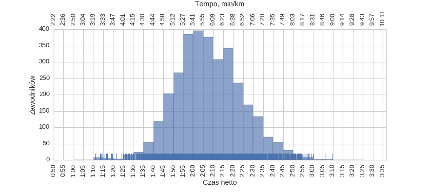
| mean | std | min | 25% | 50% | 75% | max | |
|---|---|---|---|---|---|---|---|
| czas | 2:07:48 | 0:16:34 | 1:10:40 | 1:56:37 | 2:06:44 | 2:18:25 | 3:09:34 |
mężczyźni
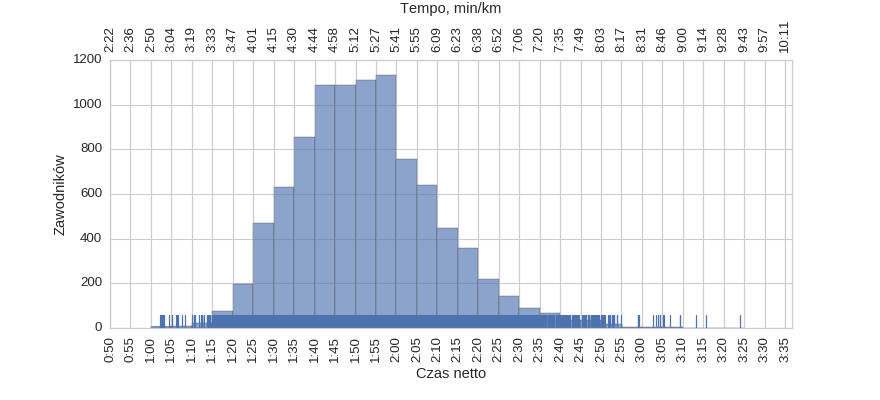
| mean | std | min | 25% | 50% | 75% | max | |
|---|---|---|---|---|---|---|---|
| czas | 1:52:41 | 0:17:17 | 1:02:14 | 1:40:33 | 1:51:24 | 2:02:31 | 3:23:59 |
Korelacje międzyczasów z wynikiem końcowym
Korelacja tempa 5 / 21.0975 km
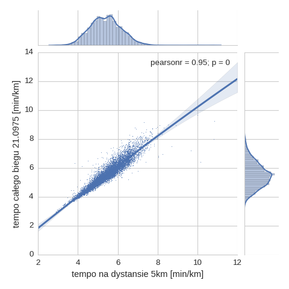
Korelacja tempa 10 / 21.0975 km
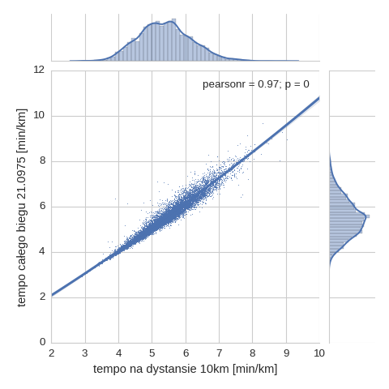
Korelacja tempa 15 / 21.0975 km
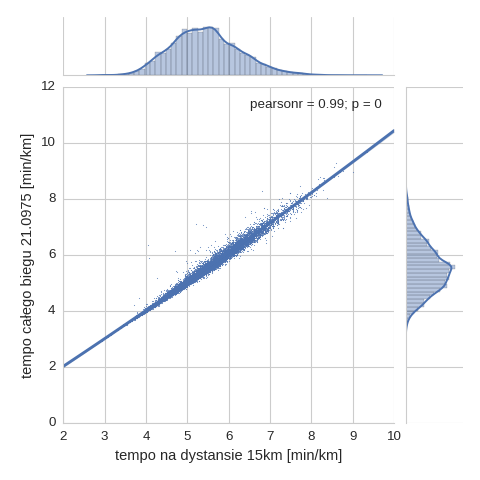
Korelacja tempa 20 / 21.0975 km
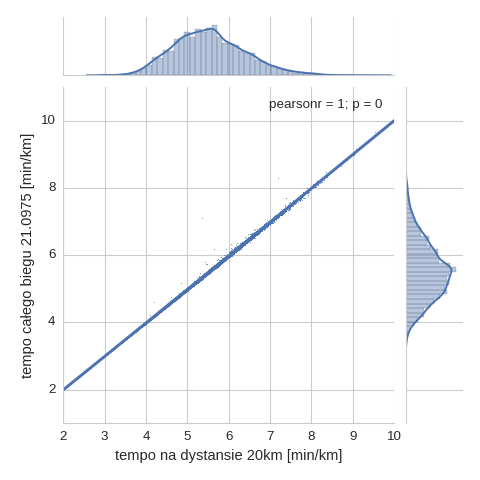
Histogram tempa na różnych dystansach
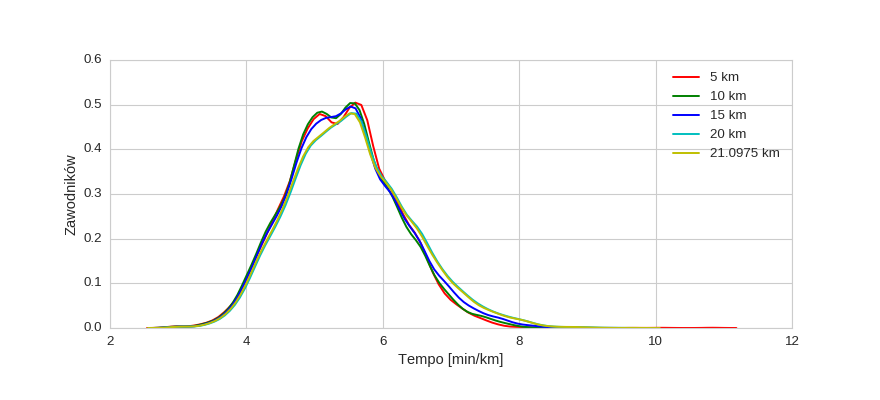
Wykresy rybkowe
wg płci
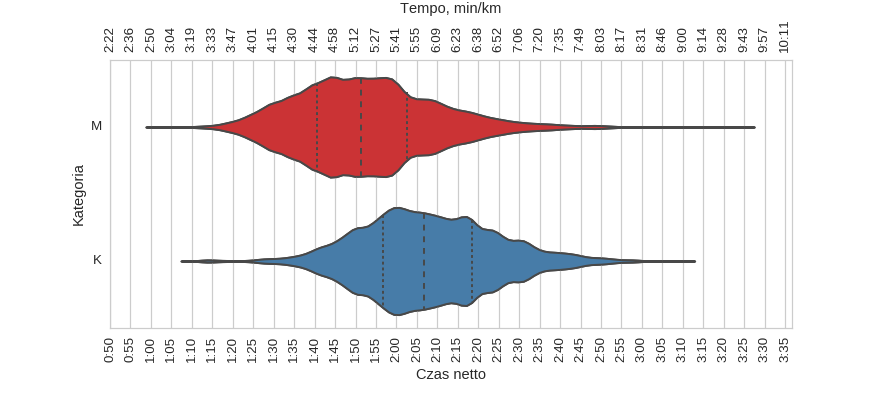
| czas_netto_s | count | |||||||
|---|---|---|---|---|---|---|---|---|
| mean | std | min | 25% | 50% | 75% | max | ||
| plec | ||||||||
| K | 2:07:48 | 0:16:34 | 1:10:40 | 1:56:37 | 2:06:44 | 2:18:25 | 3:09:34 | 3221 |
| M | 1:52:41 | 0:17:17 | 1:02:14 | 1:40:33 | 1:51:24 | 2:02:31 | 3:23:59 | 9514 |
wg kategorii
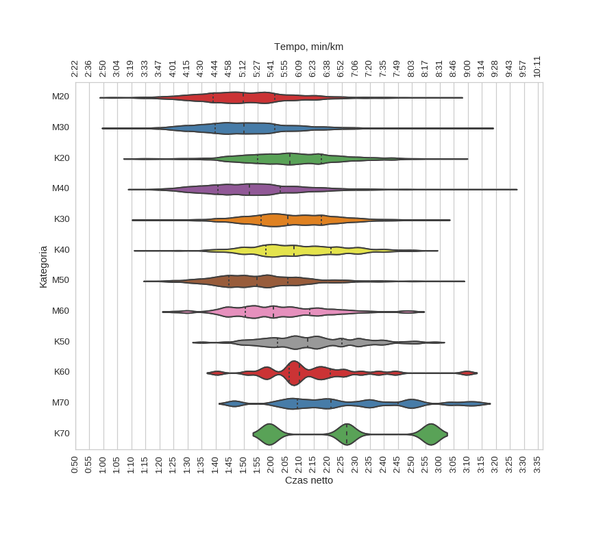
| czas_netto_s | count | |||||||
|---|---|---|---|---|---|---|---|---|
| mean | std | min | 25% | 50% | 75% | max | ||
| kat | ||||||||
| K20 | 2:06:41 | 0:17:21 | 1:10:40 | 1:55:05 | 2:06:24 | 2:17:39 | 3:06:19 | 854 |
| K30 | 2:06:56 | 0:15:57 | 1:13:21 | 1:56:14 | 2:05:42 | 2:17:49 | 3:00:17 | 1492 |
| K40 | 2:09:26 | 0:16:23 | 1:14:14 | 1:57:54 | 2:07:54 | 2:21:10 | 2:55:49 | 724 |
| K50 | 2:14:34 | 0:16:28 | 1:35:06 | 2:02:07 | 2:12:47 | 2:25:06 | 2:58:12 | 121 |
| K60 | 2:14:04 | 0:17:52 | 1:40:30 | 2:06:17 | 2:10:02 | 2:20:55 | 3:09:34 | 27 |
| K70 | 2:27:31 | 0:28:49 | 1:59:06 | 2:12:55 | 2:26:45 | 2:41:44 | 2:56:44 | 3 |
| M20 | 1:51:07 | 0:17:46 | 1:02:14 | 1:39:09 | 1:49:46 | 2:01:11 | 3:04:23 | 1608 |
| M30 | 1:51:37 | 0:17:01 | 1:02:53 | 1:39:45 | 1:50:13 | 2:01:04 | 3:15:34 | 4019 |
| M40 | 1:53:10 | 0:16:54 | 1:12:12 | 1:40:52 | 1:52:01 | 2:03:08 | 3:23:59 | 2908 |
| M50 | 1:56:01 | 0:16:07 | 1:17:32 | 1:44:43 | 1:54:45 | 2:05:52 | 3:05:28 | 751 |
| M60 | 2:02:17 | 0:17:04 | 1:24:25 | 1:50:31 | 2:00:31 | 2:13:34 | 2:50:55 | 200 |
| M70 | 2:26:41 | 0:23:30 | 1:45:53 | 2:09:09 | 2:21:12 | 2:45:03 | 3:13:07 | 27 |
wg krajów
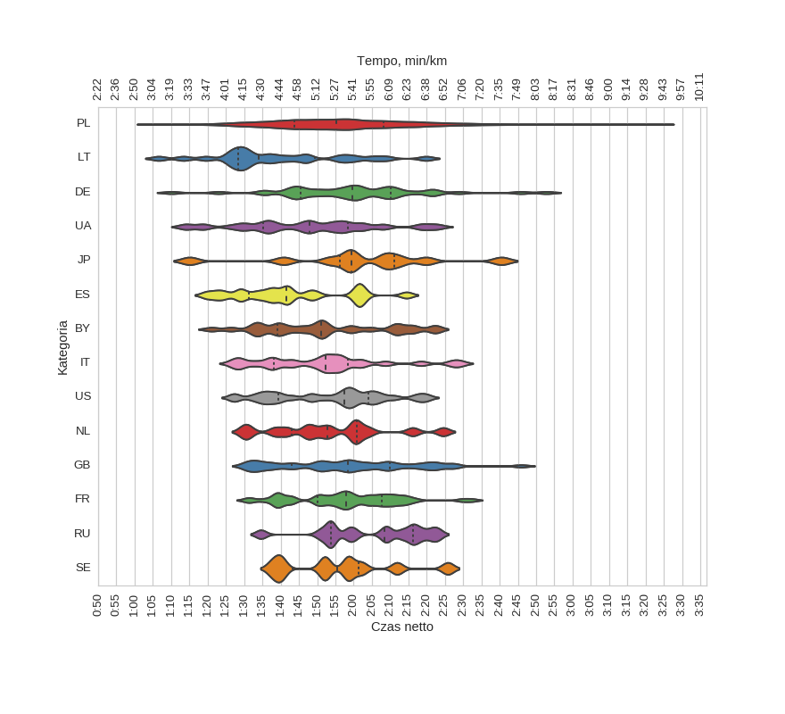
| czas_netto_s | count | |||||||
|---|---|---|---|---|---|---|---|---|
| mean | std | min | 25% | 50% | 75% | max | ||
| kraj | ||||||||
| BY | 1:52:05 | 0:17:37 | 1:21:02 | 1:39:14 | 1:51:06 | 2:08:02 | 2:22:19 | 27 |
| DE | 1:59:50 | 0:19:39 | 1:10:06 | 1:45:34 | 1:59:32 | 2:10:04 | 2:52:48 | 41 |
| ES | 1:42:48 | 0:15:32 | 1:19:39 | 1:31:14 | 1:41:28 | 1:55:14 | 2:14:29 | 19 |
| FR | 1:57:36 | 0:14:14 | 1:30:49 | 1:50:02 | 1:58:03 | 2:07:39 | 2:32:23 | 49 |
| GB | 1:58:27 | 0:18:42 | 1:30:30 | 1:43:05 | 1:58:21 | 2:09:56 | 2:45:50 | 41 |
| IT | 1:51:52 | 0:17:07 | 1:26:42 | 1:38:05 | 1:52:18 | 1:58:24 | 2:29:11 | 24 |
| JP | 2:01:38 | 0:21:47 | 1:15:05 | 1:56:12 | 1:59:29 | 2:11:10 | 2:40:28 | 11 |
| LT | 1:39:02 | 0:18:06 | 1:06:35 | 1:28:15 | 1:34:04 | 1:49:15 | 2:19:51 | 24 |
| NL | 1:53:26 | 0:15:45 | 1:29:51 | 1:43:01 | 1:52:43 | 2:00:48 | 2:24:33 | 14 |
| PL | 1:56:38 | 0:18:16 | 1:04:18 | 1:43:41 | 1:55:22 | 2:08:15 | 3:23:59 | 12262 |
| RU | 2:04:48 | 0:13:53 | 1:34:36 | 1:53:53 | 2:08:22 | 2:16:12 | 2:23:10 | 15 |
| SE | 1:55:52 | 0:15:11 | 1:37:34 | 1:43:14 | 1:55:28 | 2:01:17 | 2:25:48 | 10 |
| UA | 1:47:39 | 0:18:35 | 1:13:49 | 1:35:13 | 1:47:58 | 1:58:26 | 2:23:22 | 37 |
| US | 1:53:26 | 0:15:17 | 1:26:55 | 1:39:27 | 1:57:26 | 2:04:02 | 2:20:12 | 30 |
wg nazwisk
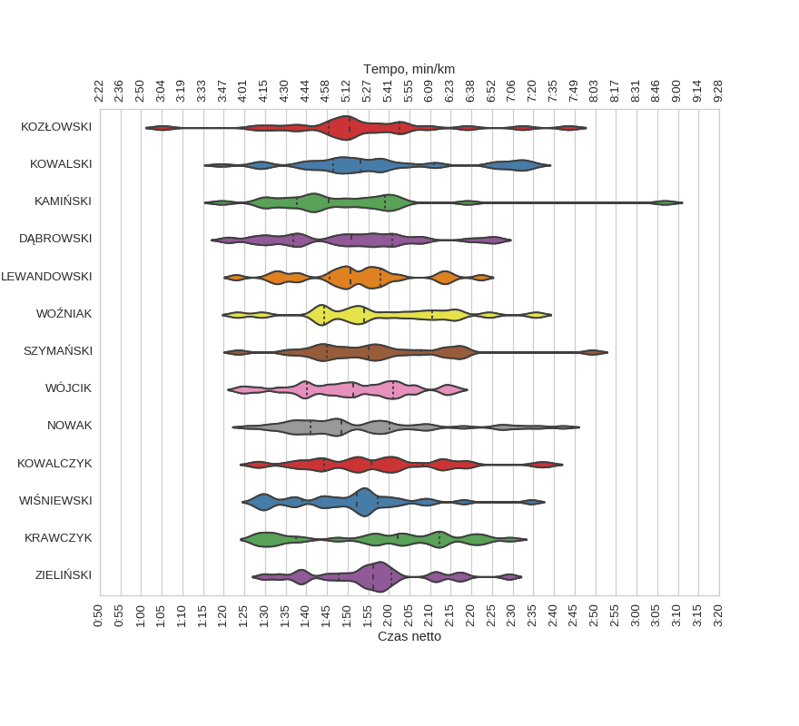
| czas_netto_s | count | |||||||
|---|---|---|---|---|---|---|---|---|
| mean | std | min | 25% | 50% | 75% | max | ||
| nazwisko | ||||||||
| DĄBROWSKI | 1:50:18 | 0:17:28 | 1:20:26 | 1:36:54 | 1:50:58 | 2:00:53 | 2:25:55 | 38 |
| KAMIŃSKI | 1:49:46 | 0:20:55 | 1:19:31 | 1:37:39 | 1:45:31 | 1:59:03 | 3:06:47 | 25 |
| KOWALCZYK | 1:57:16 | 0:17:20 | 1:27:25 | 1:44:16 | 1:55:45 | 2:08:16 | 2:38:28 | 32 |
| KOWALSKI | 1:57:54 | 0:20:26 | 1:19:23 | 1:46:26 | 1:53:12 | 2:10:55 | 2:34:57 | 37 |
| KOZŁOWSKI | 1:53:16 | 0:20:17 | 1:05:10 | 1:45:20 | 1:50:27 | 2:02:30 | 2:43:35 | 24 |
| KRAWCZYK | 1:57:37 | 0:19:30 | 1:27:58 | 1:37:31 | 2:02:07 | 2:12:20 | 2:29:22 | 27 |
| LEWANDOWSKI | 1:51:51 | 0:14:31 | 1:22:58 | 1:45:33 | 1:50:44 | 1:57:52 | 2:22:17 | 25 |
| NOWAK | 1:53:48 | 0:18:54 | 1:25:54 | 1:40:58 | 1:48:24 | 2:00:10 | 2:42:15 | 41 |
| SZYMAŃSKI | 1:57:04 | 0:17:53 | 1:23:34 | 1:45:03 | 1:55:09 | 2:07:50 | 2:49:15 | 25 |
| WIŚNIEWSKI | 1:50:37 | 0:15:19 | 1:27:31 | 1:39:00 | 1:52:11 | 1:57:23 | 2:34:30 | 30 |
| WOŹNIAK | 1:57:33 | 0:18:10 | 1:23:18 | 1:44:20 | 1:53:56 | 2:10:30 | 2:35:35 | 20 |
| WÓJCIK | 1:51:01 | 0:13:51 | 1:23:45 | 1:40:15 | 1:51:21 | 2:00:58 | 2:16:05 | 32 |
| ZIELIŃSKI | 1:55:45 | 0:14:15 | 1:29:46 | 1:47:47 | 1:56:09 | 2:00:38 | 2:29:09 | 25 |
wg miejscowości
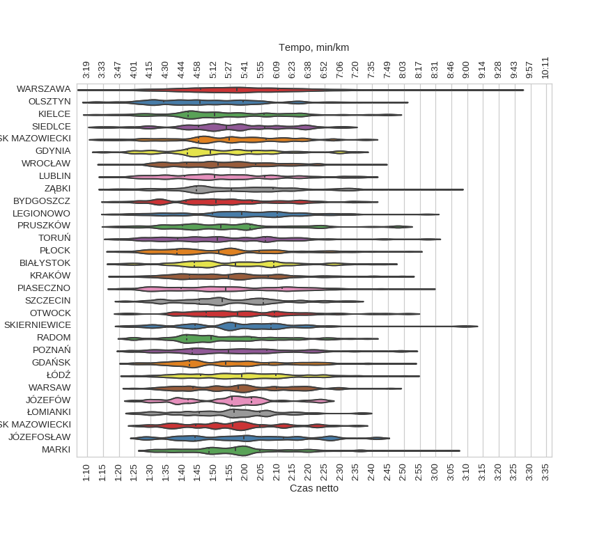
| czas_netto_s | count | |||||||
|---|---|---|---|---|---|---|---|---|
| mean | std | min | 25% | 50% | 75% | max | ||
| miejscowosc | ||||||||
| BIAŁYSTOK | 1:57:29 | 0:18:35 | 1:19:57 | 1:43:51 | 1:56:48 | 2:08:51 | 2:44:02 | 63 |
| BYDGOSZCZ | 1:52:39 | 0:17:45 | 1:18:03 | 1:41:18 | 1:50:38 | 2:02:06 | 2:38:06 | 81 |
| GDAŃSK | 1:55:33 | 0:18:33 | 1:23:53 | 1:42:24 | 1:53:42 | 2:07:16 | 2:50:09 | 91 |
| GDYNIA | 1:51:04 | 0:17:36 | 1:15:07 | 1:41:44 | 1:48:59 | 2:01:56 | 2:35:07 | 61 |
| GRODZISK MAZOWIECKI | 1:55:32 | 0:16:11 | 1:26:10 | 1:44:18 | 1:55:58 | 2:04:28 | 2:35:12 | 54 |
| JÓZEFOSŁAW | 1:59:31 | 0:19:13 | 1:27:28 | 1:43:57 | 1:59:29 | 2:12:02 | 2:41:29 | 48 |
| JÓZEFÓW | 1:53:57 | 0:14:50 | 1:24:43 | 1:41:52 | 1:55:41 | 2:01:58 | 2:24:51 | 43 |
| KIELCE | 1:52:58 | 0:18:33 | 1:12:28 | 1:41:57 | 1:50:15 | 2:05:53 | 2:45:25 | 88 |
| KRAKÓW | 1:55:59 | 0:18:23 | 1:20:24 | 1:42:14 | 1:54:35 | 2:07:06 | 2:49:26 | 119 |
| LEGIONOWO | 1:58:47 | 0:18:10 | 1:18:06 | 1:49:37 | 1:58:52 | 2:10:01 | 2:57:19 | 100 |
| LUBLIN | 1:53:16 | 0:18:25 | 1:17:20 | 1:40:49 | 1:50:14 | 2:06:02 | 2:37:59 | 140 |
| MARKI | 1:58:18 | 0:18:01 | 1:29:43 | 1:48:26 | 1:56:43 | 2:04:33 | 3:03:53 | 70 |
| MIŃSK MAZOWIECKI | 1:54:40 | 0:18:12 | 1:14:15 | 1:45:03 | 1:54:51 | 2:06:27 | 2:37:58 | 55 |
| OLSZTYN | 1:48:09 | 0:18:31 | 1:12:12 | 1:34:10 | 1:45:38 | 1:59:10 | 2:47:26 | 115 |
| OTWOCK | 1:59:12 | 0:17:58 | 1:22:06 | 1:47:36 | 1:57:31 | 2:09:10 | 2:51:15 | 62 |
| PIASECZNO | 1:55:25 | 0:19:45 | 1:20:26 | 1:39:35 | 1:53:47 | 2:11:32 | 2:55:49 | 145 |
| POZNAŃ | 1:56:07 | 0:18:54 | 1:23:08 | 1:43:11 | 1:54:33 | 2:06:48 | 2:50:24 | 146 |
| PRUSZKÓW | 1:54:18 | 0:20:09 | 1:18:41 | 1:40:12 | 1:52:11 | 2:01:20 | 2:48:30 | 95 |
| PŁOCK | 1:52:37 | 0:19:30 | 1:20:00 | 1:38:25 | 1:51:34 | 2:04:11 | 2:51:45 | 81 |
| RADOM | 1:53:03 | 0:16:22 | 1:22:58 | 1:41:23 | 1:49:09 | 2:01:49 | 2:38:28 | 93 |
| SIEDLCE | 1:54:56 | 0:17:26 | 1:13:52 | 1:45:04 | 1:53:58 | 2:05:56 | 2:31:38 | 56 |
| SKIERNIEWICE | 1:57:26 | 0:19:13 | 1:22:39 | 1:43:58 | 1:56:43 | 2:07:56 | 3:09:17 | 44 |
| SZCZECIN | 1:54:54 | 0:15:59 | 1:21:58 | 1:45:29 | 1:52:35 | 2:05:32 | 2:33:53 | 69 |
| TORUŃ | 1:53:12 | 0:19:33 | 1:19:17 | 1:38:39 | 1:51:03 | 2:06:22 | 2:57:31 | 62 |
| WARSAW | 1:58:00 | 0:16:33 | 1:24:33 | 1:43:24 | 1:57:48 | 2:09:53 | 2:45:47 | 97 |
| WARSZAWA | 1:58:36 | 0:18:11 | 1:10:35 | 1:45:43 | 1:57:18 | 2:10:09 | 3:23:59 | 6012 |
| WROCŁAW | 1:53:06 | 0:15:36 | 1:16:24 | 1:41:23 | 1:51:15 | 2:03:07 | 2:41:27 | 110 |
| ZĄBKI | 1:58:23 | 0:21:09 | 1:17:51 | 1:44:33 | 1:55:36 | 2:08:41 | 3:04:22 | 77 |
| ŁOMIANKI | 1:55:01 | 0:15:15 | 1:25:10 | 1:45:28 | 1:56:28 | 2:04:25 | 2:36:43 | 43 |
| ŁÓDŹ | 1:59:08 | 0:17:26 | 1:24:02 | 1:45:44 | 1:58:42 | 2:09:39 | 2:51:18 | 123 |
Menu
HistogramyKorelacjeHistogram - międzyczasyWykresy rybkowe
∙ wg płci
∙ wg kategorii
∙ wg krajów
∙ wg nazwisk
∙ wg miejscowości
Dystans: 21.0975 km
Liczba uczestników: 12735
Wygenerowano: 2017-04-17 11:33:40.164515